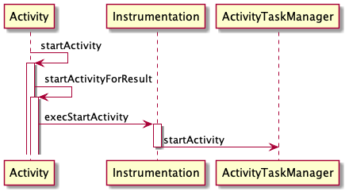
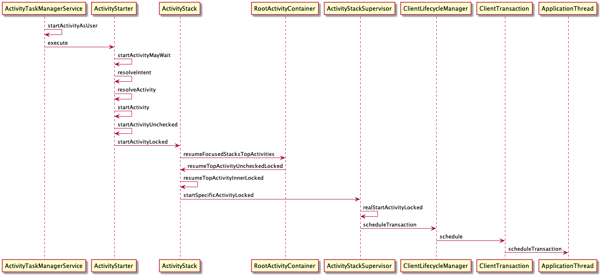
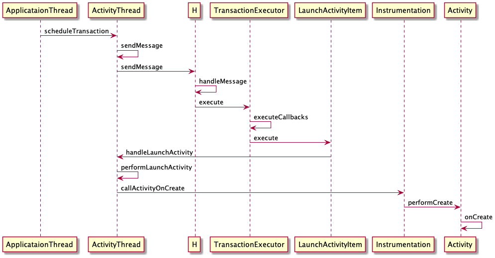
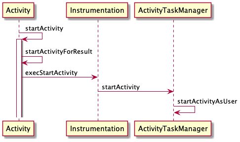

Acitivty启动流程
Contents
前言
从startActivity开始说起
Activity.startActivity
我们知道启动 Activity 需要调用 startActivity 。具体这里做了什么我们不知道，所以我们今天到源码里一探究竟。
/frameworks/base/core/java/android/app/Activity.java
public void startActivity(Intent intent, @Nullable Bundle options) {
if (options != null) {
startActivityForResult(intent, -1, options);
} else {
startActivityForResult(intent, -1);
}
}
startActivity 最终调用了 startActivityForResult 。
Activity.startActivityForResult
/frameworks/base/core/java/android/app/Activity.java
public void startActivityForResult(@RequiresPermission Intent intent, int requestCode,
@Nullable Bundle options) {
if (mParent == null) {
options = transferSpringboardActivityOptions(options);
// 调用 Instrumentation 的 execStartActivity
Instrumentation.ActivityResult ar =
mInstrumentation.execStartActivity(
this, mMainThread.getApplicationThread(), mToken, this,
intent, requestCode, options);
if (ar != null) {
mMainThread.sendActivityResult(
mToken, mEmbeddedID, requestCode, ar.getResultCode(),
ar.getResultData());
}
if (requestCode >= 0) {
mStartedActivity = true;
}
cancelInputsAndStartExitTransition(options);
} else {
// ...
}
}
在 startActivityForResult 中调用了 Instrumentation.execStartActivity ，并把 ApplicationThread 和 IBinder 传递过去。
ApplicationThread 表示的是当前应用，这样 AMS 就知道新应用是被谁启动的。
mToken 则是 Binder 对象，代表者是哪个 Activity 启动的新 Activity 。启动后 AMS 还要让它洗洗睡了(Pause)。
有了这两个参数， AMS 就知道是哪个应用的哪个页面启动的新应用，方便 AMS 做协调。
Instrumentation.execStartActivity
/frameworks/base/core/java/android/app/Instrumentation.java
public ActivityResult execStartActivity(
Context who, IBinder contextThread, IBinder token, Activity target,
Intent intent, int requestCode, Bundle options) {
IApplicationThread whoThread = (IApplicationThread) contextThread;
Uri referrer = target != null ? target.onProvideReferrer() : null;
if (referrer != null) {
intent.putExtra(Intent.EXTRA_REFERRER, referrer);
}
// ...
try {
intent.migrateExtraStreamToClipData();
intent.prepareToLeaveProcess(who);
int result = ActivityTaskManager.getService()
.startActivity(whoThread, who.getBasePackageName(), intent,
intent.resolveTypeIfNeeded(who.getContentResolver()),
token, target != null ? target.mEmbeddedID : null,
requestCode, 0, null, options);
checkStartActivityResult(result, intent);
} catch (RemoteException e) {
throw new RuntimeException("Failure from system", e);
}
return null;
}
在 Instrumentation 的 execStartActivity 中通过 ActivityTaskManagerService 的 startActivity 把启动的任务交给了 AMS 。
ActivityTaskManagerService 这个类是新出现的，之前的版本是通过 ActivityManagerNative.getDefault 来实现的。如果发现不一样不要觉得奇怪。
小结
到这里启动 Activity 的任务就交给 AMS 处理了。我们画个时序图来梳理一下。

AMS中的处理
ActivityTaskManagerService.startActivity
/frameworks/base/services/core/java/com/android/server/wm/ActivityTaskManagerService.java
public final int startActivity(IApplicationThread caller, String callingPackage,
Intent intent, String resolvedType, IBinder resultTo, String resultWho, int requestCode,
int startFlags, ProfilerInfo profilerInfo, Bundle bOptions) {
return startActivityAsUser(caller, callingPackage, intent, resolvedType, resultTo,
resultWho, requestCode, startFlags, profilerInfo, bOptions,
UserHandle.getCallingUserId());
}
public int startActivityAsUser(IApplicationThread caller, String callingPackage,
Intent intent, String resolvedType, IBinder resultTo, String resultWho, int requestCode,
int startFlags, ProfilerInfo profilerInfo, Bundle bOptions, int userId) {
return startActivityAsUser(caller, callingPackage, intent, resolvedType, resultTo,
resultWho, requestCode, startFlags, profilerInfo, bOptions, userId,
true /*validateIncomingUser*/);
}
ActivityStartController getActivityStartController() {
return mActivityStartController;
}
int startActivityAsUser(IApplicationThread caller, String callingPackage,
Intent intent, String resolvedType, IBinder resultTo, String resultWho, int requestCode,
int startFlags, ProfilerInfo profilerInfo, Bundle bOptions, int userId,
boolean validateIncomingUser) {
enforceNotIsolatedCaller("startActivityAsUser");
userId = getActivityStartController().checkTargetUser(userId, validateIncomingUser,
Binder.getCallingPid(), Binder.getCallingUid(), "startActivityAsUser");
return getActivityStartController().obtainStarter(intent, "startActivityAsUser")
.setCaller(caller)
.setCallingPackage(callingPackage)
.setResolvedType(resolvedType)
.setResultTo(resultTo)
.setResultWho(resultWho)
.setRequestCode(requestCode)
.setStartFlags(startFlags)
.setProfilerInfo(profilerInfo)
.setActivityOptions(bOptions)
.setMayWait(userId)
.execute();
}
经过一系列的调用，最后来到 startActivityAsUser ，在这个方法中会先通过 ActivityStartController 去获取 ActivityStarter ，如下所示
ActivityStartController.obtainStarter
/frameworks/base/services/core/java/com/android/server/wm/ActivityStartController.java
ActivityStarter obtainStarter(Intent intent, String reason) {
return mFactory.obtain().setIntent(intent).setReason(reason);
}
获取到 ActivityStarter 之后一通赋值，然后调用了 ActivityStarter.execute 。
ActivityStarter.execute
/frameworks/base/services/core/java/com/android/server/wm/ActivityStarter.java
int execute() {
try {
if (mRequest.mayWait) {
return startActivityMayWait(mRequest.caller, mRequest.callingUid,
mRequest.callingPackage, mRequest.realCallingPid, mRequest.realCallingUid,
mRequest.intent, mRequest.resolvedType,
mRequest.voiceSession, mRequest.voiceInteractor, mRequest.resultTo,
mRequest.resultWho, mRequest.requestCode, mRequest.startFlags,
mRequest.profilerInfo, mRequest.waitResult, mRequest.globalConfig,
mRequest.activityOptions, mRequest.ignoreTargetSecurity, mRequest.userId,
mRequest.inTask, mRequest.reason,
mRequest.allowPendingRemoteAnimationRegistryLookup,
mRequest.originatingPendingIntent, mRequest.allowBackgroundActivityStart);
} else {
// ...
}
} finally {
onExecutionComplete();
}
}
在这个方法中，把任务交给了 startActivityMayWait 。
ActivityStarter.startActivityMayWait
/frameworks/base/services/core/java/com/android/server/wm/ActivityStarter.java
private int startActivityMayWait(IApplicationThread caller, int callingUid,
String callingPackage, int requestRealCallingPid, int requestRealCallingUid,
Intent intent, String resolvedType, IVoiceInteractionSession voiceSession,
IVoiceInteractor voiceInteractor, IBinder resultTo, String resultWho, int requestCode,
int startFlags, ProfilerInfo profilerInfo, WaitResult outResult,
Configuration globalConfig, SafeActivityOptions options, boolean ignoreTargetSecurity,
int userId, TaskRecord inTask, String reason,
boolean allowPendingRemoteAnimationRegistryLookup,
PendingIntentRecord originatingPendingIntent, boolean allowBackgroundActivityStart) {
// ...
final Intent ephemeralIntent = new Intent(intent);
intent = new Intent(intent);
// ...
ResolveInfo rInfo = mSupervisor.resolveIntent(intent, resolvedType, userId,
0 ,
computeResolveFilterUid(
callingUid, realCallingUid, mRequest.filterCallingUid));
// ...
ActivityInfo aInfo = mSupervisor.resolveActivity(intent, rInfo, startFlags, profilerInfo);
synchronized (mService.mGlobalLock) {
final ActivityStack stack = mRootActivityContainer.getTopDisplayFocusedStack();
stack.mConfigWillChange = globalConfig != null
&& mService.getGlobalConfiguration().diff(globalConfig) != 0;
final long origId = Binder.clearCallingIdentity();
// ...
final ActivityRecord[] outRecord = new ActivityRecord[1];
int res = startActivity(caller, intent, ephemeralIntent, resolvedType, aInfo, rInfo,
voiceSession, voiceInteractor, resultTo, resultWho, requestCode, callingPid,
callingUid, callingPackage, realCallingPid, realCallingUid, startFlags, options,
ignoreTargetSecurity, componentSpecified, outRecord, inTask, reason,
allowPendingRemoteAnimationRegistryLookup, originatingPendingIntent,
allowBackgroundActivityStart);
Binder.restoreCallingIdentity(origId);
//...
return res;
}
}
这个方法里做的事情比较多
- resolveIntent，根据
Intent寻找最合适的Activity。 - resolveActivity，收集
Activity的信息，也就是找到对应的Activity组件。 - 创建ActivityRecord，然后调用
startactivity。
ActivityStarter.startActivity
/frameworks/base/services/core/java/com/android/server/wm/ActivityStarter.java
private int startActivity(IApplicationThread caller, Intent intent, Intent ephemeralIntent,
String resolvedType, ActivityInfo aInfo, ResolveInfo rInfo,
IVoiceInteractionSession voiceSession, IVoiceInteractor voiceInteractor,
IBinder resultTo, String resultWho, int requestCode, int callingPid, int callingUid,
String callingPackage, int realCallingPid, int realCallingUid, int startFlags,
SafeActivityOptions options, boolean ignoreTargetSecurity, boolean componentSpecified,
ActivityRecord[] outActivity, TaskRecord inTask, String reason,
boolean allowPendingRemoteAnimationRegistryLookup,
PendingIntentRecord originatingPendingIntent, boolean allowBackgroundActivityStart) {
if (TextUtils.isEmpty(reason)) {
throw new IllegalArgumentException("Need to specify a reason.");
}
mLastStartReason = reason;
mLastStartActivityTimeMs = System.currentTimeMillis();
mLastStartActivityRecord[0] = null;
mLastStartActivityResult = startActivity(caller, intent, ephemeralIntent, resolvedType,
aInfo, rInfo, voiceSession, voiceInteractor, resultTo, resultWho, requestCode,
callingPid, callingUid, callingPackage, realCallingPid, realCallingUid, startFlags,
options, ignoreTargetSecurity, componentSpecified, mLastStartActivityRecord,
inTask, allowPendingRemoteAnimationRegistryLookup, originatingPendingIntent,
allowBackgroundActivityStart);
if (outActivity != null) {
outActivity[0] = mLastStartActivityRecord[0];
}
return getExternalResult(mLastStartActivityResult);
}
private int startActivity(IApplicationThread caller, Intent intent, Intent ephemeralIntent,
String resolvedType, ActivityInfo aInfo, ResolveInfo rInfo,
IVoiceInteractionSession voiceSession, IVoiceInteractor voiceInteractor,
IBinder resultTo, String resultWho, int requestCode, int callingPid, int callingUid,
String callingPackage, int realCallingPid, int realCallingUid, int startFlags,
SafeActivityOptions options,
boolean ignoreTargetSecurity, boolean componentSpecified, ActivityRecord[] outActivity,
TaskRecord inTask, boolean allowPendingRemoteAnimationRegistryLookup,
PendingIntentRecord originatingPendingIntent, boolean allowBackgroundActivityStart) {
// 创建 ActivityRecord，用于记录 Activity
ActivityRecord r = new ActivityRecord(mService, callerApp, callingPid, callingUid,
callingPackage, intent, resolvedType, aInfo, mService.getGlobalConfiguration(),
resultRecord, resultWho, requestCode, componentSpecified, voiceSession != null,
mSupervisor, checkedOptions, sourceRecord);
if (outActivity != null) {
outActivity[0] = r;
}
final ActivityStack stack = mRootActivityContainer.getTopDisplayFocusedStack();
final int res = startActivity(r, sourceRecord, voiceSession, voiceInteractor, startFlags,
true /* doResume */, checkedOptions, inTask, outActivity, restrictedBgActivity);
return res;
}
private int startActivity(final ActivityRecord r, ActivityRecord sourceRecord,
IVoiceInteractionSession voiceSession, IVoiceInteractor voiceInteractor,
int startFlags, boolean doResume, ActivityOptions options, TaskRecord inTask,
ActivityRecord[] outActivity, boolean restrictedBgActivity) {
int result = START_CANCELED;
final ActivityStack startedActivityStack;
try {
mService.mWindowManager.deferSurfaceLayout();
result = startActivityUnchecked(r, sourceRecord, voiceSession, voiceInteractor,
startFlags, doResume, options, inTask, outActivity, restrictedBgActivity);
} finally {
final ActivityStack currentStack = r.getActivityStack();
startedActivityStack = currentStack != null ? currentStack : mTargetStack;
if (ActivityManager.isStartResultSuccessful(result)) {
if (startedActivityStack != null) {
final ActivityRecord currentTop =
startedActivityStack.topRunningActivityLocked();
if (currentTop != null && currentTop.shouldUpdateConfigForDisplayChanged()) {
mRootActivityContainer.ensureVisibilityAndConfig(
currentTop, currentTop.getDisplayId(),
true /* markFrozenIfConfigChanged */, false /* deferResume */);
}
}
} else {
final ActivityStack stack = mStartActivity.getActivityStack();
if (stack != null) {
stack.finishActivityLocked(mStartActivity, RESULT_CANCELED,
null /* intentResultData */, "startActivity", true /* oomAdj */);
}
if (startedActivityStack != null && startedActivityStack.isAttached()
&& startedActivityStack.numActivities() == 0
&& !startedActivityStack.isActivityTypeHome()) {
startedActivityStack.remove();
}
}
mService.mWindowManager.continueSurfaceLayout();
}
postStartActivityProcessing(r, result, startedActivityStack);
return result;
}
在 startActivity 中多次调用了重载的 startActivity ，其中包含了 ActivityRecord 的创建，它是用来记录 Activity 的。紧接着调用了 startActivityUnchecked 。
ActivityStarter.startActivityUnchecked
/frameworks/base/services/core/java/com/android/server/wm/ActivityStarter.java
private int startActivityUnchecked(final ActivityRecord r, ActivityRecord sourceRecord,
IVoiceInteractionSession voiceSession, IVoiceInteractor voiceInteractor,
int startFlags, boolean doResume, ActivityOptions options, TaskRecord inTask,
ActivityRecord[] outActivity, boolean restrictedBgActivity) {
setInitialState(r, options, inTask, doResume, startFlags, sourceRecord, voiceSession,
voiceInteractor, restrictedBgActivity);
// ...
boolean newTask = false;
final TaskRecord taskToAffiliate = (mLaunchTaskBehind && mSourceRecord != null)
? mSourceRecord.getTaskRecord() : null;
// Should this be considered a new task?
int result = START_SUCCESS;
if (mStartActivity.resultTo == null && mInTask == null && !mAddingToTask
&& (mLaunchFlags & FLAG_ACTIVITY_NEW_TASK) != 0) {
newTask = true;
// 创建任务栈
result = setTaskFromReuseOrCreateNewTask(taskToAffiliate);
} else if (mSourceRecord != null) {
result = setTaskFromSourceRecord();
} else if (mInTask != null) {
result = setTaskFromInTask();
} else {
result = setTaskToCurrentTopOrCreateNewTask();
}
if (result != START_SUCCESS) {
return result;
}
// 创建 Activity
mTargetStack.startActivityLocked(mStartActivity, topFocused, newTask, mKeepCurTransition,
mOptions);
if (mDoResume) {
final ActivityRecord topTaskActivity =
mStartActivity.getTaskRecord().topRunningActivityLocked();
if (!mTargetStack.isFocusable()
|| (topTaskActivity != null && topTaskActivity.mTaskOverlay
&& mStartActivity != topTaskActivity)) {
mTargetStack.ensureActivitiesVisibleLocked(mStartActivity, 0, !PRESERVE_WINDOWS);
mTargetStack.getDisplay().mDisplayContent.executeAppTransition();
} else {
if (mTargetStack.isFocusable()
&& !mRootActivityContainer.isTopDisplayFocusedStack(mTargetStack)) {
mTargetStack.moveToFront("startActivityUnchecked");
}
mRootActivityContainer.resumeFocusedStacksTopActivities(
mTargetStack, mStartActivity, mOptions);
}
} else if (mStartActivity != null) {
mSupervisor.mRecentTasks.add(mStartActivity.getTaskRecord());
}
mRootActivityContainer.updateUserStack(mStartActivity.mUserId, mTargetStack);
mSupervisor.handleNonResizableTaskIfNeeded(mStartActivity.getTaskRecord(),
preferredWindowingMode, mPreferredDisplayId, mTargetStack);
return START_SUCCESS;
}
ActivityStack.startActivityLocked
/frameworks/base/services/core/java/com/android/server/wm/ActivityStack.java
void startActivityLocked(ActivityRecord r, ActivityRecord focusedTopActivity,
boolean newTask, boolean keepCurTransition, ActivityOptions options) {
TaskRecord rTask = r.getTaskRecord();
final int taskId = rTask.taskId;
if (!r.mLaunchTaskBehind && (taskForIdLocked(taskId) == null || newTask)) {
insertTaskAtTop(rTask, r);
}
TaskRecord task = null;
if (!newTask) {
// If starting in an existing task, find where that is...
boolean startIt = true;
for (int taskNdx = mTaskHistory.size() - 1; taskNdx >= 0; --taskNdx) {
task = mTaskHistory.get(taskNdx);
if (task.getTopActivity() == null) {
continue;
}
if (task == rTask) {
if (!startIt) {
if (DEBUG_ADD_REMOVE) Slog.i(TAG, "Adding activity " + r + " to task "
+ task, new RuntimeException("here").fillInStackTrace());
r.createAppWindowToken();
ActivityOptions.abort(options);
return;
}
break;
} else if (task.numFullscreen > 0) {
startIt = false;
}
}
}
final TaskRecord activityTask = r.getTaskRecord();
if (task == activityTask && mTaskHistory.indexOf(task) != (mTaskHistory.size() - 1)) {
mStackSupervisor.mUserLeaving = false;
if (DEBUG_USER_LEAVING) Slog.v(TAG_USER_LEAVING,
"startActivity() behind front, mUserLeaving=false");
}
task = activityTask;
// Slot the activity into the history stack and proceed
if (DEBUG_ADD_REMOVE) Slog.i(TAG, "Adding activity " + r + " to stack to task " + task,
new RuntimeException("here").fillInStackTrace());
if (r.mAppWindowToken == null) {
r.createAppWindowToken();
}
task.setFrontOfTask();
if (!isHomeOrRecentsStack() || numActivities() > 0) {
final DisplayContent dc = getDisplay().mDisplayContent;
if (DEBUG_TRANSITION) Slog.v(TAG_TRANSITION,
"Prepare open transition: starting " + r);
if ((r.intent.getFlags() & Intent.FLAG_ACTIVITY_NO_ANIMATION) != 0) {
dc.prepareAppTransition(TRANSIT_NONE, keepCurTransition);
mStackSupervisor.mNoAnimActivities.add(r);
} else {
int transit = TRANSIT_ACTIVITY_OPEN;
if (newTask) {
if (r.mLaunchTaskBehind) {
transit = TRANSIT_TASK_OPEN_BEHIND;
} else {
if (canEnterPipOnTaskSwitch(focusedTopActivity,
null /* toFrontTask */, r, options)) {
focusedTopActivity.supportsEnterPipOnTaskSwitch = true;
}
transit = TRANSIT_TASK_OPEN;
}
}
dc.prepareAppTransition(transit, keepCurTransition);
mStackSupervisor.mNoAnimActivities.remove(r);
}
boolean doShow = true;
if (newTask) {
if ((r.intent.getFlags() & Intent.FLAG_ACTIVITY_RESET_TASK_IF_NEEDED) != 0) {
resetTaskIfNeededLocked(r, r);
doShow = topRunningNonDelayedActivityLocked(null) == r;
}
} else if (options != null && options.getAnimationType()
== ActivityOptions.ANIM_SCENE_TRANSITION) {
doShow = false;
}
if (r.mLaunchTaskBehind) {
r.setVisibility(true);
ensureActivitiesVisibleLocked(null, 0, !PRESERVE_WINDOWS);
} else if (SHOW_APP_STARTING_PREVIEW && doShow) {
TaskRecord prevTask = r.getTaskRecord();
ActivityRecord prev = prevTask.topRunningActivityWithStartingWindowLocked();
if (prev != null) {
if (prev.getTaskRecord() != prevTask) {
prev = null;
}
else if (prev.nowVisible) {
prev = null;
}
}
r.showStartingWindow(prev, newTask, isTaskSwitch(r, focusedTopActivity));
}
} else {
ActivityOptions.abort(options);
}
}
RootActivityContainer.resumeFocusedStacksTopActivities
/frameworks/base/services/core/java/com/android/server/wm/RootActivityContainer.java
boolean resumeFocusedStacksTopActivities(
ActivityStack targetStack, ActivityRecord target, ActivityOptions targetOptions) {
if (!mStackSupervisor.readyToResume()) {
return false;
}
boolean result = false;
if (targetStack != null && (targetStack.isTopStackOnDisplay()
|| getTopDisplayFocusedStack() == targetStack)) {
result = targetStack.resumeTopActivityUncheckedLocked(target, targetOptions);
}
for (int displayNdx = mActivityDisplays.size() - 1; displayNdx >= 0; --displayNdx) {
boolean resumedOnDisplay = false;
final ActivityDisplay display = mActivityDisplays.get(displayNdx);
for (int stackNdx = display.getChildCount() - 1; stackNdx >= 0; --stackNdx) {
final ActivityStack stack = display.getChildAt(stackNdx);
final ActivityRecord topRunningActivity = stack.topRunningActivityLocked();
if (!stack.isFocusableAndVisible() || topRunningActivity == null) {
continue;
}
if (stack == targetStack) {
resumedOnDisplay |= result;
continue;
}
if (display.isTopStack(stack) && topRunningActivity.isState(RESUMED)) {
stack.executeAppTransition(targetOptions);
} else {
resumedOnDisplay |= topRunningActivity.makeActiveIfNeeded(target);
}
}
if (!resumedOnDisplay) {
final ActivityStack focusedStack = display.getFocusedStack();
if (focusedStack != null) {
focusedStack.resumeTopActivityUncheckedLocked(target, targetOptions);
}
}
}
return result;
}
ActivityStack.resumeTopActivityUncheckedLocked
/frameworks/base/services/core/java/com/android/server/wm/ActivityStack.java
boolean resumeTopActivityUncheckedLocked(ActivityRecord prev, ActivityOptions options) {
if (mInResumeTopActivity) {
// Don't even start recursing.
return false;
}
boolean result = false;
try {
// Protect against recursion.
mInResumeTopActivity = true;
result = resumeTopActivityInnerLocked(prev, options);
final ActivityRecord next = topRunningActivityLocked(true /* focusableOnly */);
if (next == null || !next.canTurnScreenOn()) {
checkReadyForSleep();
}
} finally {
mInResumeTopActivity = false;
}
return result;
}
ActivityStack.resumeTopActivityInnerLocked
/frameworks/base/services/core/java/com/android/server/wm/ActivityStack.java
private boolean resumeTopActivityInnerLocked(ActivityRecord prev, ActivityOptions options) {
if (!mService.isBooting() && !mService.isBooted()) {
// Not ready yet!
return false;
}
ActivityRecord next = topRunningActivityLocked(true /* focusableOnly */);
final boolean hasRunningActivity = next != null;
// TODO: Maybe this entire condition can get removed?
if (hasRunningActivity && !isAttached()) {
return false;
}
mRootActivityContainer.cancelInitializingActivities();
// Remember how we'll process this pause/resume situation, and ensure
// that the state is reset however we wind up proceeding.
boolean userLeaving = mStackSupervisor.mUserLeaving;
mStackSupervisor.mUserLeaving = false;
if (!hasRunningActivity) {
// There are no activities left in the stack, let's look somewhere else.
return resumeNextFocusableActivityWhenStackIsEmpty(prev, options);
}
next.delayedResume = false;
final ActivityDisplay display = getDisplay();
// If the top activity is the resumed one, nothing to do.
if (mResumedActivity == next && next.isState(RESUMED)
&& display.allResumedActivitiesComplete()) {
// Make sure we have executed any pending transitions, since there
// should be nothing left to do at this point.
executeAppTransition(options);
if (DEBUG_STATES) Slog.d(TAG_STATES,
"resumeTopActivityLocked: Top activity resumed " + next);
return false;
}
if (!next.canResumeByCompat()) {
return false;
}
// If we are sleeping, and there is no resumed activity, and the top
// activity is paused, well that is the state we want.
if (shouldSleepOrShutDownActivities()
&& mLastPausedActivity == next
&& mRootActivityContainer.allPausedActivitiesComplete()) {
// If the current top activity may be able to occlude keyguard but the occluded state
// has not been set, update visibility and check again if we should continue to resume.
boolean nothingToResume = true;
if (!mService.mShuttingDown) {
final boolean canShowWhenLocked = !mTopActivityOccludesKeyguard
&& next.canShowWhenLocked();
final boolean mayDismissKeyguard = mTopDismissingKeyguardActivity != next
&& next.mAppWindowToken != null
&& next.mAppWindowToken.containsDismissKeyguardWindow();
if (canShowWhenLocked || mayDismissKeyguard) {
ensureActivitiesVisibleLocked(null /* starting */, 0 /* configChanges */,
!PRESERVE_WINDOWS);
nothingToResume = shouldSleepActivities();
}
}
if (nothingToResume) {
// Make sure we have executed any pending transitions, since there
// should be nothing left to do at this point.
executeAppTransition(options);
if (DEBUG_STATES) Slog.d(TAG_STATES,
"resumeTopActivityLocked: Going to sleep and all paused");
return false;
}
}
// Make sure that the user who owns this activity is started. If not,
// we will just leave it as is because someone should be bringing
// another user's activities to the top of the stack.
if (!mService.mAmInternal.hasStartedUserState(next.mUserId)) {
Slog.w(TAG, "Skipping resume of top activity " + next
+ ": user " + next.mUserId + " is stopped");
return false;
}
// The activity may be waiting for stop, but that is no longer
// appropriate for it.
mStackSupervisor.mStoppingActivities.remove(next);
mStackSupervisor.mGoingToSleepActivities.remove(next);
next.sleeping = false;
if (DEBUG_SWITCH) Slog.v(TAG_SWITCH, "Resuming " + next);
// If we are currently pausing an activity, then don't do anything until that is done.
if (!mRootActivityContainer.allPausedActivitiesComplete()) {
if (DEBUG_SWITCH || DEBUG_PAUSE || DEBUG_STATES) Slog.v(TAG_PAUSE,
"resumeTopActivityLocked: Skip resume: some activity pausing.");
return false;
}
mStackSupervisor.setLaunchSource(next.info.applicationInfo.uid);
boolean lastResumedCanPip = false;
ActivityRecord lastResumed = null;
final ActivityStack lastFocusedStack = display.getLastFocusedStack();
if (lastFocusedStack != null && lastFocusedStack != this) {
// So, why aren't we using prev here??? See the param comment on the method. prev doesn't
// represent the last resumed activity. However, the last focus stack does if it isn't null.
lastResumed = lastFocusedStack.mResumedActivity;
if (userLeaving && inMultiWindowMode() && lastFocusedStack.shouldBeVisible(next)) {
// The user isn't leaving if this stack is the multi-window mode and the last
// focused stack should still be visible.
if(DEBUG_USER_LEAVING) Slog.i(TAG_USER_LEAVING, "Overriding userLeaving to false"
+ " next=" + next + " lastResumed=" + lastResumed);
userLeaving = false;
}
lastResumedCanPip = lastResumed != null && lastResumed.checkEnterPictureInPictureState(
"resumeTopActivity", userLeaving /* beforeStopping */);
}
final boolean resumeWhilePausing = (next.info.flags & FLAG_RESUME_WHILE_PAUSING) != 0
&& !lastResumedCanPip;
boolean pausing = getDisplay().pauseBackStacks(userLeaving, next, false);
if (mResumedActivity != null) {
if (DEBUG_STATES) Slog.d(TAG_STATES,
"resumeTopActivityLocked: Pausing " + mResumedActivity);
pausing |= startPausingLocked(userLeaving, false, next, false);
}
if (pausing && !resumeWhilePausing) {
if (DEBUG_SWITCH || DEBUG_STATES) Slog.v(TAG_STATES,
"resumeTopActivityLocked: Skip resume: need to start pausing");
if (next.attachedToProcess()) {
next.app.updateProcessInfo(false /* updateServiceConnectionActivities */,
true /* activityChange */, false /* updateOomAdj */);
}
if (lastResumed != null) {
lastResumed.setWillCloseOrEnterPip(true);
}
return true;
} else if (mResumedActivity == next && next.isState(RESUMED)
&& display.allResumedActivitiesComplete()) {
executeAppTransition(options);
if (DEBUG_STATES) Slog.d(TAG_STATES,
"resumeTopActivityLocked: Top activity resumed (dontWaitForPause) " + next);
return true;
}
if (shouldSleepActivities() && mLastNoHistoryActivity != null &&
!mLastNoHistoryActivity.finishing) {
if (DEBUG_STATES) Slog.d(TAG_STATES,
"no-history finish of " + mLastNoHistoryActivity + " on new resume");
requestFinishActivityLocked(mLastNoHistoryActivity.appToken, Activity.RESULT_CANCELED,
null, "resume-no-history", false);
mLastNoHistoryActivity = null;
}
if (prev != null && prev != next && next.nowVisible) {
if (prev.finishing) {
prev.setVisibility(false);
if (DEBUG_SWITCH) Slog.v(TAG_SWITCH,
"Not waiting for visible to hide: " + prev
+ ", nowVisible=" + next.nowVisible);
} else {
if (DEBUG_SWITCH) Slog.v(TAG_SWITCH,
"Previous already visible but still waiting to hide: " + prev
+ ", nowVisible=" + next.nowVisible);
}
}
try {
AppGlobals.getPackageManager().setPackageStoppedState(
next.packageName, false, next.mUserId); /* TODO: Verify if correct userid */
} catch (RemoteException e1) {
} catch (IllegalArgumentException e) {
Slog.w(TAG, "Failed trying to unstop package "
+ next.packageName + ": " + e);
}
// We are starting up the next activity, so tell the window manager
// that the previous one will be hidden soon. This way it can know
// to ignore it when computing the desired screen orientation.
boolean anim = true;
final DisplayContent dc = getDisplay().mDisplayContent;
if (prev != null) {
if (prev.finishing) {
if (DEBUG_TRANSITION) Slog.v(TAG_TRANSITION,
"Prepare close transition: prev=" + prev);
if (mStackSupervisor.mNoAnimActivities.contains(prev)) {
anim = false;
dc.prepareAppTransition(TRANSIT_NONE, false);
} else {
dc.prepareAppTransition(
prev.getTaskRecord() == next.getTaskRecord() ? TRANSIT_ACTIVITY_CLOSE
: TRANSIT_TASK_CLOSE, false);
}
prev.setVisibility(false);
} else {
if (DEBUG_TRANSITION) Slog.v(TAG_TRANSITION,
"Prepare open transition: prev=" + prev);
if (mStackSupervisor.mNoAnimActivities.contains(next)) {
anim = false;
dc.prepareAppTransition(TRANSIT_NONE, false);
} else {
dc.prepareAppTransition(
prev.getTaskRecord() == next.getTaskRecord() ? TRANSIT_ACTIVITY_OPEN
: next.mLaunchTaskBehind ? TRANSIT_TASK_OPEN_BEHIND
: TRANSIT_TASK_OPEN, false);
}
}
} else {
if (DEBUG_TRANSITION) Slog.v(TAG_TRANSITION, "Prepare open transition: no previous");
if (mStackSupervisor.mNoAnimActivities.contains(next)) {
anim = false;
dc.prepareAppTransition(TRANSIT_NONE, false);
} else {
dc.prepareAppTransition(TRANSIT_ACTIVITY_OPEN, false);
}
}
if (anim) {
next.applyOptionsLocked();
} else {
next.clearOptionsLocked();
}
mStackSupervisor.mNoAnimActivities.clear();
if (next.attachedToProcess()) {
final boolean lastActivityTranslucent = lastFocusedStack != null
&& (lastFocusedStack.inMultiWindowMode()
|| (lastFocusedStack.mLastPausedActivity != null
&& !lastFocusedStack.mLastPausedActivity.fullscreen));
// This activity is now becoming visible.
if (!next.visible || next.stopped || lastActivityTranslucent) {
next.setVisibility(true);
}
// schedule launch ticks to collect information about slow apps.
next.startLaunchTickingLocked();
ActivityRecord lastResumedActivity =
lastFocusedStack == null ? null : lastFocusedStack.mResumedActivity;
final ActivityState lastState = next.getState();
mService.updateCpuStats();
if (DEBUG_STATES) Slog.v(TAG_STATES, "Moving to RESUMED: " + next
+ " (in existing)");
next.setState(RESUMED, "resumeTopActivityInnerLocked");
next.app.updateProcessInfo(false /* updateServiceConnectionActivities */,
true /* activityChange */, true /* updateOomAdj */);
updateLRUListLocked(next);
// Have the window manager re-evaluate the orientation of
// the screen based on the new activity order.
boolean notUpdated = true;
// Activity should also be visible if set mLaunchTaskBehind to true (see
// ActivityRecord#shouldBeVisibleIgnoringKeyguard()).
if (shouldBeVisible(next)) {
// We have special rotation behavior when here is some active activity that
// requests specific orientation or Keyguard is locked. Make sure all activity
// visibilities are set correctly as well as the transition is updated if needed
// to get the correct rotation behavior. Otherwise the following call to update
// the orientation may cause incorrect configurations delivered to client as a
// result of invisible window resize.
// TODO: Remove this once visibilities are set correctly immediately when
// starting an activity.
notUpdated = !mRootActivityContainer.ensureVisibilityAndConfig(next, mDisplayId,
true /* markFrozenIfConfigChanged */, false /* deferResume */);
}
if (notUpdated) {
// The configuration update wasn't able to keep the existing
// instance of the activity, and instead started a new one.
// We should be all done, but let's just make sure our activity
// is still at the top and schedule another run if something
// weird happened.
ActivityRecord nextNext = topRunningActivityLocked();
if (DEBUG_SWITCH || DEBUG_STATES) Slog.i(TAG_STATES,
"Activity config changed during resume: " + next
+ ", new next: " + nextNext);
if (nextNext != next) {
// Do over!
mStackSupervisor.scheduleResumeTopActivities();
}
if (!next.visible || next.stopped) {
next.setVisibility(true);
}
next.completeResumeLocked();
return true;
}
try {
final ClientTransaction transaction =
ClientTransaction.obtain(next.app.getThread(), next.appToken);
// Deliver all pending results.
ArrayList<ResultInfo> a = next.results;
if (a != null) {
final int N = a.size();
if (!next.finishing && N > 0) {
if (DEBUG_RESULTS) Slog.v(TAG_RESULTS,
"Delivering results to " + next + ": " + a);
transaction.addCallback(ActivityResultItem.obtain(a));
}
}
if (next.newIntents != null) {
transaction.addCallback(
NewIntentItem.obtain(next.newIntents, true /* resume */));
}
// Well the app will no longer be stopped.
// Clear app token stopped state in window manager if needed.
next.notifyAppResumed(next.stopped);
EventLog.writeEvent(EventLogTags.AM_RESUME_ACTIVITY, next.mUserId,
System.identityHashCode(next), next.getTaskRecord().taskId,
next.shortComponentName);
next.sleeping = false;
mService.getAppWarningsLocked().onResumeActivity(next);
next.app.setPendingUiCleanAndForceProcessStateUpTo(mService.mTopProcessState);
next.clearOptionsLocked();
transaction.setLifecycleStateRequest(
ResumeActivityItem.obtain(next.app.getReportedProcState(),
getDisplay().mDisplayContent.isNextTransitionForward()));
mService.getLifecycleManager().scheduleTransaction(transaction);
if (DEBUG_STATES) Slog.d(TAG_STATES, "resumeTopActivityLocked: Resumed "
+ next);
} catch (Exception e) {
// Whoops, need to restart this activity!
if (DEBUG_STATES) Slog.v(TAG_STATES, "Resume failed; resetting state to "
+ lastState + ": " + next);
next.setState(lastState, "resumeTopActivityInnerLocked");
// lastResumedActivity being non-null implies there is a lastStack present.
if (lastResumedActivity != null) {
lastResumedActivity.setState(RESUMED, "resumeTopActivityInnerLocked");
}
Slog.i(TAG, "Restarting because process died: " + next);
if (!next.hasBeenLaunched) {
next.hasBeenLaunched = true;
} else if (SHOW_APP_STARTING_PREVIEW && lastFocusedStack != null
&& lastFocusedStack.isTopStackOnDisplay()) {
next.showStartingWindow(null /* prev */, false /* newTask */,
false /* taskSwitch */);
}
mStackSupervisor.startSpecificActivityLocked(next, true, false);
return true;
}
// From this point on, if something goes wrong there is no way
// to recover the activity.
try {
next.completeResumeLocked();
} catch (Exception e) {
// If any exception gets thrown, toss away this
// activity and try the next one.
Slog.w(TAG, "Exception thrown during resume of " + next, e);
requestFinishActivityLocked(next.appToken, Activity.RESULT_CANCELED, null,
"resume-exception", true);
return true;
}
} else {
// Whoops, need to restart this activity!
if (!next.hasBeenLaunched) {
next.hasBeenLaunched = true;
} else {
if (SHOW_APP_STARTING_PREVIEW) {
next.showStartingWindow(null /* prev */, false /* newTask */,
false /* taskSwich */);
}
if (DEBUG_SWITCH) Slog.v(TAG_SWITCH, "Restarting: " + next);
}
if (DEBUG_STATES) Slog.d(TAG_STATES, "resumeTopActivityLocked: Restarting " + next);
mStackSupervisor.startSpecificActivityLocked(next, true, true);
}
return true;
}
ActivityStackSupervisor.startSpecificActivityLocked
/frameworks/base/services/core/java/com/android/server/wm/ActivityStackSupervisor.java
void startSpecificActivityLocked(ActivityRecord r, boolean andResume, boolean checkConfig) {
// Is this activity's application already running?
final WindowProcessController wpc =
mService.getProcessController(r.processName, r.info.applicationInfo.uid);
boolean knownToBeDead = false;
if (wpc != null && wpc.hasThread()) {
try {
realStartActivityLocked(r, wpc, andResume, checkConfig);
return;
} catch (RemoteException e) {
Slog.w(TAG, "Exception when starting activity "
+ r.intent.getComponent().flattenToShortString(), e);
}
// If a dead object exception was thrown -- fall through to
// restart the application.
knownToBeDead = true;
}
if (getKeyguardController().isKeyguardLocked()) {
r.notifyUnknownVisibilityLaunched();
}
try {
if (Trace.isTagEnabled(TRACE_TAG_ACTIVITY_MANAGER)) {
Trace.traceBegin(TRACE_TAG_ACTIVITY_MANAGER, "dispatchingStartProcess:"
+ r.processName);
}
// Post message to start process to avoid possible deadlock of calling into AMS with the
// ATMS lock held.
final Message msg = PooledLambda.obtainMessage(
ActivityManagerInternal::startProcess, mService.mAmInternal, r.processName,
r.info.applicationInfo, knownToBeDead, "activity", r.intent.getComponent());
mService.mH.sendMessage(msg);
} finally {
Trace.traceEnd(TRACE_TAG_ACTIVITY_MANAGER);
}
}
ActivityStackSupervisor.realStartActivityLocked
/frameworks/base/services/core/java/com/android/server/wm/ActivityStackSupervisor.java
boolean realStartActivityLocked(ActivityRecord r, WindowProcessController proc,
boolean andResume, boolean checkConfig) throws RemoteException {
if (!mRootActivityContainer.allPausedActivitiesComplete()) {
if (DEBUG_SWITCH || DEBUG_PAUSE || DEBUG_STATES) Slog.v(TAG_PAUSE,
"realStartActivityLocked: Skipping start of r=" + r
+ " some activities pausing...");
return false;
}
final TaskRecord task = r.getTaskRecord();
final ActivityStack stack = task.getStack();
beginDeferResume();
try {
r.startFreezingScreenLocked(proc, 0);
// schedule launch ticks to collect information about slow apps.
r.startLaunchTickingLocked();
r.setProcess(proc);
// Ensure activity is allowed to be resumed after process has set.
if (andResume && !r.canResumeByCompat()) {
andResume = false;
}
if (getKeyguardController().isKeyguardLocked()) {
r.notifyUnknownVisibilityLaunched();
}
if (checkConfig) {
mRootActivityContainer.ensureVisibilityAndConfig(r, r.getDisplayId(),
false /* markFrozenIfConfigChanged */, true /* deferResume */);
}
if (r.getActivityStack().checkKeyguardVisibility(r, true /* shouldBeVisible */,
true /* isTop */)) {
r.setVisibility(true);
}
final int applicationInfoUid =
(r.info.applicationInfo != null) ? r.info.applicationInfo.uid : -1;
if ((r.mUserId != proc.mUserId) || (r.appInfo.uid != applicationInfoUid)) {
Slog.wtf(TAG,
"User ID for activity changing for " + r
+ " appInfo.uid=" + r.appInfo.uid
+ " info.ai.uid=" + applicationInfoUid
+ " old=" + r.app + " new=" + proc);
}
r.launchCount++;
r.lastLaunchTime = SystemClock.uptimeMillis();
if (DEBUG_ALL) Slog.v(TAG, "Launching: " + r);
proc.addActivityIfNeeded(r);
final LockTaskController lockTaskController = mService.getLockTaskController();
if (task.mLockTaskAuth == LOCK_TASK_AUTH_LAUNCHABLE
|| task.mLockTaskAuth == LOCK_TASK_AUTH_LAUNCHABLE_PRIV
|| (task.mLockTaskAuth == LOCK_TASK_AUTH_WHITELISTED
&& lockTaskController.getLockTaskModeState()
== LOCK_TASK_MODE_LOCKED)) {
lockTaskController.startLockTaskMode(task, false, 0 /* blank UID */);
}
try {
if (!proc.hasThread()) {
throw new RemoteException();
}
List<ResultInfo> results = null;
List<ReferrerIntent> newIntents = null;
if (andResume) {
// We don't need to deliver new intents and/or set results if activity is going
// to pause immediately after launch.
results = r.results;
newIntents = r.newIntents;
}
if (DEBUG_SWITCH) Slog.v(TAG_SWITCH,
"Launching: " + r + " icicle=" + r.icicle + " with results=" + results
+ " newIntents=" + newIntents + " andResume=" + andResume);
EventLog.writeEvent(EventLogTags.AM_RESTART_ACTIVITY, r.mUserId,
System.identityHashCode(r), task.taskId, r.shortComponentName);
if (r.isActivityTypeHome()) {
// Home process is the root process of the task.
updateHomeProcess(task.mActivities.get(0).app);
}
mService.getPackageManagerInternalLocked().notifyPackageUse(
r.intent.getComponent().getPackageName(), NOTIFY_PACKAGE_USE_ACTIVITY);
r.sleeping = false;
r.forceNewConfig = false;
mService.getAppWarningsLocked().onStartActivity(r);
r.compat = mService.compatibilityInfoForPackageLocked(r.info.applicationInfo);
// Because we could be starting an Activity in the system process this may not go
// across a Binder interface which would create a new Configuration. Consequently
// we have to always create a new Configuration here.
final MergedConfiguration mergedConfiguration = new MergedConfiguration(
proc.getConfiguration(), r.getMergedOverrideConfiguration());
r.setLastReportedConfiguration(mergedConfiguration);
logIfTransactionTooLarge(r.intent, r.icicle);
// Create activity launch transaction.
final ClientTransaction clientTransaction = ClientTransaction.obtain(
proc.getThread(), r.appToken);
final DisplayContent dc = r.getDisplay().mDisplayContent;
clientTransaction.addCallback(LaunchActivityItem.obtain(new Intent(r.intent),
System.identityHashCode(r), r.info,
// TODO: Have this take the merged configuration instead of separate global
// and override configs.
mergedConfiguration.getGlobalConfiguration(),
mergedConfiguration.getOverrideConfiguration(), r.compat,
r.launchedFromPackage, task.voiceInteractor, proc.getReportedProcState(),
r.icicle, r.persistentState, results, newIntents,
dc.isNextTransitionForward(), proc.createProfilerInfoIfNeeded(),
r.assistToken));
// Set desired final state.
final ActivityLifecycleItem lifecycleItem;
if (andResume) {
lifecycleItem = ResumeActivityItem.obtain(dc.isNextTransitionForward());
} else {
lifecycleItem = PauseActivityItem.obtain();
}
clientTransaction.setLifecycleStateRequest(lifecycleItem);
// Schedule transaction.
mService.getLifecycleManager().scheduleTransaction(clientTransaction);
if ((proc.mInfo.privateFlags & ApplicationInfo.PRIVATE_FLAG_CANT_SAVE_STATE) != 0
&& mService.mHasHeavyWeightFeature) {
// This may be a heavy-weight process! Note that the package manager will ensure
// that only activity can run in the main process of the .apk, which is the only
// thing that will be considered heavy-weight.
if (proc.mName.equals(proc.mInfo.packageName)) {
if (mService.mHeavyWeightProcess != null
&& mService.mHeavyWeightProcess != proc) {
Slog.w(TAG, "Starting new heavy weight process " + proc
+ " when already running "
+ mService.mHeavyWeightProcess);
}
mService.setHeavyWeightProcess(r);
}
}
} catch (RemoteException e) {
if (r.launchFailed) {
// This is the second time we failed -- finish activity and give up.
Slog.e(TAG, "Second failure launching "
+ r.intent.getComponent().flattenToShortString() + ", giving up", e);
proc.appDied();
stack.requestFinishActivityLocked(r.appToken, Activity.RESULT_CANCELED, null,
"2nd-crash", false);
return false;
}
// This is the first time we failed -- restart process and
// retry.
r.launchFailed = true;
proc.removeActivity(r);
throw e;
}
} finally {
endDeferResume();
}
r.launchFailed = false;
if (stack.updateLRUListLocked(r)) {
Slog.w(TAG, "Activity " + r + " being launched, but already in LRU list");
}
// TODO(lifecycler): Resume or pause requests are done as part of launch transaction,
// so updating the state should be done accordingly.
if (andResume && readyToResume()) {
// As part of the process of launching, ActivityThread also performs
// a resume.
stack.minimalResumeActivityLocked(r);
} else {
// This activity is not starting in the resumed state... which should look like we asked
// it to pause+stop (but remain visible), and it has done so and reported back the
// current icicle and other state.
if (DEBUG_STATES) Slog.v(TAG_STATES,
"Moving to PAUSED: " + r + " (starting in paused state)");
r.setState(PAUSED, "realStartActivityLocked");
}
// Perform OOM scoring after the activity state is set, so the process can be updated with
// the latest state.
proc.onStartActivity(mService.mTopProcessState, r.info);
// Launch the new version setup screen if needed. We do this -after-
// launching the initial activity (that is, home), so that it can have
// a chance to initialize itself while in the background, making the
// switch back to it faster and look better.
if (mRootActivityContainer.isTopDisplayFocusedStack(stack)) {
mService.getActivityStartController().startSetupActivity();
}
// Update any services we are bound to that might care about whether
// their client may have activities.
if (r.app != null) {
r.app.updateServiceConnectionActivities();
}
return true;
}
ClientLifecycleManager.scheduleTransaction
/frameworks/base/services/core/java/com/android/server/wm/ClientLifecycleManager.java
void scheduleTransaction(ClientTransaction transaction) throws RemoteException {
final IApplicationThread client = transaction.getClient();
transaction.schedule();
if (!(client instanceof Binder)) {
transaction.recycle();
}
}
ClientTransaction.schedule
/frameworks/base/core/java/android/app/servertransaction/ClientTransaction.java
private IApplicationThread mClient;
public void schedule() throws RemoteException {
mClient.scheduleTransaction(this);
}
小结

App中启动Activity
/frameworks/base/core/java/android/app/ActivityThread.java
ApplicationThread.scheduleTransaction
private class ApplicationThread extends IApplicationThread.Stub {
@Override
public void scheduleTransaction(ClientTransaction transaction) throws RemoteException {
ActivityThread.this.scheduleTransaction(transaction);
}
}
ActivityThread.scheduleTransaction
/frameworks/base/core/java/android/app/ClientTransactionHandler.java
void scheduleTransaction(ClientTransaction transaction) {
transaction.preExecute(this);
sendMessage(ActivityThread.H.EXECUTE_TRANSACTION, transaction);
}
abstract void sendMessage(int what, Object obj);
ActivityThread
public final class ActivityThread extends ClientTransactionHandler {
void sendMessage(int what, Object obj) {
sendMessage(what, obj, 0, 0, false);
}
private void sendMessage(int what, Object obj, int arg1, int arg2, boolean async) {
if (DEBUG_MESSAGES) {
Slog.v(TAG,
"SCHEDULE " + what + " " + mH.codeToString(what) + ": " + arg1 + " / " + obj);
}
Message msg = Message.obtain();
msg.what = what;
msg.obj = obj;
msg.arg1 = arg1;
msg.arg2 = arg2;
if (async) {
msg.setAsynchronous(true);
}
mH.sendMessage(msg);
}
}
H.handleMessage
/Volumes/Android10/tsinghua/frameworks/base/core/java/android/app/ActivityThread.java
class H extends Handler {
public void handleMessage(Message msg) {
case EXECUTE_TRANSACTION:
final ClientTransaction transaction = (ClientTransaction) msg.obj;
mTransactionExecutor.execute(transaction);
if (isSystem()) {
transaction.recycle();
}
break;
// ...
}
}
TransactionExecutor.execute
/frameworks/base/core/java/android/app/servertransaction/TransactionExecutor.java
public void execute(ClientTransaction transaction) {
if (DEBUG_RESOLVER) Slog.d(TAG, tId(transaction) + "Start resolving transaction");
final IBinder token = transaction.getActivityToken();
if (token != null) {
final Map<IBinder, ClientTransactionItem> activitiesToBeDestroyed =
mTransactionHandler.getActivitiesToBeDestroyed();
final ClientTransactionItem destroyItem = activitiesToBeDestroyed.get(token);
if (destroyItem != null) {
if (transaction.getLifecycleStateRequest() == destroyItem) {
// It is going to execute the transaction that will destroy activity with the
// token, so the corresponding to-be-destroyed record can be removed.
activitiesToBeDestroyed.remove(token);
}
if (mTransactionHandler.getActivityClient(token) == null) {
// The activity has not been created but has been requested to destroy, so all
// transactions for the token are just like being cancelled.
Slog.w(TAG, tId(transaction) + "Skip pre-destroyed transaction:\n"
+ transactionToString(transaction, mTransactionHandler));
return;
}
}
}
if (DEBUG_RESOLVER) Slog.d(TAG, transactionToString(transaction, mTransactionHandler));
executeCallbacks(transaction);
executeLifecycleState(transaction);
mPendingActions.clear();
if (DEBUG_RESOLVER) Slog.d(TAG, tId(transaction) + "End resolving transaction");
}
TransactionExecutor.executeCallbacks
/frameworks/base/core/java/android/app/servertransaction/TransactionExecutor.java
public void executeCallbacks(ClientTransaction transaction) {
final List<ClientTransactionItem> callbacks = transaction.getCallbacks();
if (callbacks == null || callbacks.isEmpty()) {
// No callbacks to execute, return early.
return;
}
if (DEBUG_RESOLVER) Slog.d(TAG, tId(transaction) + "Resolving callbacks in transaction");
final IBinder token = transaction.getActivityToken();
ActivityClientRecord r = mTransactionHandler.getActivityClient(token);
// In case when post-execution state of the last callback matches the final state requested
// for the activity in this transaction, we won't do the last transition here and do it when
// moving to final state instead (because it may contain additional parameters from server).
final ActivityLifecycleItem finalStateRequest = transaction.getLifecycleStateRequest();
final int finalState = finalStateRequest != null ? finalStateRequest.getTargetState()
: UNDEFINED;
// Index of the last callback that requests some post-execution state.
final int lastCallbackRequestingState = lastCallbackRequestingState(transaction);
final int size = callbacks.size();
for (int i = 0; i < size; ++i) {
final ClientTransactionItem item = callbacks.get(i);
if (DEBUG_RESOLVER) Slog.d(TAG, tId(transaction) + "Resolving callback: " + item);
final int postExecutionState = item.getPostExecutionState();
final int closestPreExecutionState = mHelper.getClosestPreExecutionState(r,
item.getPostExecutionState());
if (closestPreExecutionState != UNDEFINED) {
cycleToPath(r, closestPreExecutionState, transaction);
}
item.execute(mTransactionHandler, token, mPendingActions);
item.postExecute(mTransactionHandler, token, mPendingActions);
if (r == null) {
// Launch activity request will create an activity record.
r = mTransactionHandler.getActivityClient(token);
}
if (postExecutionState != UNDEFINED && r != null) {
// Skip the very last transition and perform it by explicit state request instead.
final boolean shouldExcludeLastTransition =
i == lastCallbackRequestingState && finalState == postExecutionState;
cycleToPath(r, postExecutionState, shouldExcludeLastTransition, transaction);
}
}
}
LaunchActivityItem.execute
/frameworks/base/core/java/android/app/servertransaction/LaunchActivityItem.java
public void execute(ClientTransactionHandler client, IBinder token,
PendingTransactionActions pendingActions) {
Trace.traceBegin(TRACE_TAG_ACTIVITY_MANAGER, "activityStart");
ActivityClientRecord r = new ActivityClientRecord(token, mIntent, mIdent, mInfo,
mOverrideConfig, mCompatInfo, mReferrer, mVoiceInteractor, mState, mPersistentState,
mPendingResults, mPendingNewIntents, mIsForward,
mProfilerInfo, client, mAssistToken);
client.handleLaunchActivity(r, pendingActions, null /* customIntent */);
Trace.traceEnd(TRACE_TAG_ACTIVITY_MANAGER);
}
ActivityThread.handleLaunchActivity
/frameworks/base/core/java/android/app/ActivityThread.java
public Activity handleLaunchActivity(ActivityClientRecord r,
PendingTransactionActions pendingActions, Intent customIntent) {
// If we are getting ready to gc after going to the background, well
// we are back active so skip it.
unscheduleGcIdler();
mSomeActivitiesChanged = true;
if (r.profilerInfo != null) {
mProfiler.setProfiler(r.profilerInfo);
mProfiler.startProfiling();
}
// Make sure we are running with the most recent config.
handleConfigurationChanged(null, null);
if (localLOGV) Slog.v(
TAG, "Handling launch of " + r);
// Initialize before creating the activity
if (!ThreadedRenderer.sRendererDisabled
&& (r.activityInfo.flags & ActivityInfo.FLAG_HARDWARE_ACCELERATED) != 0) {
HardwareRenderer.preload();
}
WindowManagerGlobal.initialize();
// Hint the GraphicsEnvironment that an activity is launching on the process.
GraphicsEnvironment.hintActivityLaunch();
final Activity a = performLaunchActivity(r, customIntent);
if (a != null) {
r.createdConfig = new Configuration(mConfiguration);
reportSizeConfigurations(r);
if (!r.activity.mFinished && pendingActions != null) {
pendingActions.setOldState(r.state);
pendingActions.setRestoreInstanceState(true);
pendingActions.setCallOnPostCreate(true);
}
} else {
// If there was an error, for any reason, tell the activity manager to stop us.
try {
ActivityTaskManager.getService()
.finishActivity(r.token, Activity.RESULT_CANCELED, null,
Activity.DONT_FINISH_TASK_WITH_ACTIVITY);
} catch (RemoteException ex) {
throw ex.rethrowFromSystemServer();
}
}
return a;
}
performLaunchActivity
/frameworks/base/core/java/android/app/ActivityThread.java
private Activity performLaunchActivity(ActivityClientRecord r, Intent customIntent) {
ActivityInfo aInfo = r.activityInfo;
if (r.packageInfo == null) {
r.packageInfo = getPackageInfo(aInfo.applicationInfo, r.compatInfo,
Context.CONTEXT_INCLUDE_CODE);
}
ComponentName component = r.intent.getComponent();
if (component == null) {
component = r.intent.resolveActivity(
mInitialApplication.getPackageManager());
r.intent.setComponent(component);
}
if (r.activityInfo.targetActivity != null) {
component = new ComponentName(r.activityInfo.packageName,
r.activityInfo.targetActivity);
}
ContextImpl appContext = createBaseContextForActivity(r);
Activity activity = null;
try {
java.lang.ClassLoader cl = appContext.getClassLoader();
activity = mInstrumentation.newActivity(
cl, component.getClassName(), r.intent);
StrictMode.incrementExpectedActivityCount(activity.getClass());
r.intent.setExtrasClassLoader(cl);
r.intent.prepareToEnterProcess();
if (r.state != null) {
r.state.setClassLoader(cl);
}
} catch (Exception e) {
if (!mInstrumentation.onException(activity, e)) {
throw new RuntimeException(
"Unable to instantiate activity " + component
+ ": " + e.toString(), e);
}
}
try {
Application app = r.packageInfo.makeApplication(false, mInstrumentation);
if (localLOGV) Slog.v(TAG, "Performing launch of " + r);
if (localLOGV) Slog.v(
TAG, r + ": app=" + app
+ ", appName=" + app.getPackageName()
+ ", pkg=" + r.packageInfo.getPackageName()
+ ", comp=" + r.intent.getComponent().toShortString()
+ ", dir=" + r.packageInfo.getAppDir());
if (activity != null) {
CharSequence title = r.activityInfo.loadLabel(appContext.getPackageManager());
Configuration config = new Configuration(mCompatConfiguration);
if (r.overrideConfig != null) {
config.updateFrom(r.overrideConfig);
}
if (DEBUG_CONFIGURATION) Slog.v(TAG, "Launching activity "
+ r.activityInfo.name + " with config " + config);
Window window = null;
if (r.mPendingRemoveWindow != null && r.mPreserveWindow) {
window = r.mPendingRemoveWindow;
r.mPendingRemoveWindow = null;
r.mPendingRemoveWindowManager = null;
}
appContext.setOuterContext(activity);
activity.attach(appContext, this, getInstrumentation(), r.token,
r.ident, app, r.intent, r.activityInfo, title, r.parent,
r.embeddedID, r.lastNonConfigurationInstances, config,
r.referrer, r.voiceInteractor, window, r.configCallback,
r.assistToken);
if (customIntent != null) {
activity.mIntent = customIntent;
}
r.lastNonConfigurationInstances = null;
checkAndBlockForNetworkAccess();
activity.mStartedActivity = false;
int theme = r.activityInfo.getThemeResource();
if (theme != 0) {
activity.setTheme(theme);
}
activity.mCalled = false;
if (r.isPersistable()) {
mInstrumentation.callActivityOnCreate(activity, r.state, r.persistentState);
} else {
mInstrumentation.callActivityOnCreate(activity, r.state);
}
if (!activity.mCalled) {
throw new SuperNotCalledException(
"Activity " + r.intent.getComponent().toShortString() +
" did not call through to super.onCreate()");
}
r.activity = activity;
}
r.setState(ON_CREATE);
// updatePendingActivityConfiguration() reads from mActivities to update
// ActivityClientRecord which runs in a different thread. Protect modifications to
// mActivities to avoid race.
synchronized (mResourcesManager) {
mActivities.put(r.token, r);
}
} catch (SuperNotCalledException e) {
throw e;
} catch (Exception e) {
if (!mInstrumentation.onException(activity, e)) {
throw new RuntimeException(
"Unable to start activity " + component
+ ": " + e.toString(), e);
}
}
return activity;
}
callActivityOnCreate
/frameworks/base/core/java/android/app/Instrumentation.java
public void callActivityOnCreate(Activity activity, Bundle icicle) {
prePerformCreate(activity);
activity.performCreate(icicle);
postPerformCreate(activity);
}
Activity.performCreate
/frameworks/base/core/java/android/app/Activity.java
final void performCreate(Bundle icicle) {
performCreate(icicle, null);
}
@UnsupportedAppUsage
final void performCreate(Bundle icicle, PersistableBundle persistentState) {
dispatchActivityPreCreated(icicle);
mCanEnterPictureInPicture = true;
restoreHasCurrentPermissionRequest(icicle);
if (persistentState != null) {
onCreate(icicle, persistentState);
} else {
onCreate(icicle);
}
writeEventLog(LOG_AM_ON_CREATE_CALLED, "performCreate");
mActivityTransitionState.readState(icicle);
mVisibleFromClient = !mWindow.getWindowStyle().getBoolean(
com.android.internal.R.styleable.Window_windowNoDisplay, false);
mFragments.dispatchActivityCreated();
mActivityTransitionState.setEnterActivityOptions(this, getActivityOptions());
dispatchActivityPostCreated(icicle);
}
小结

总结
